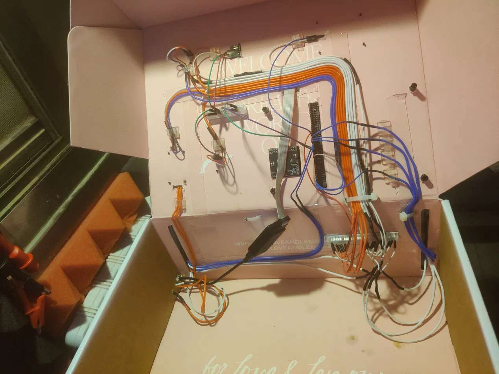
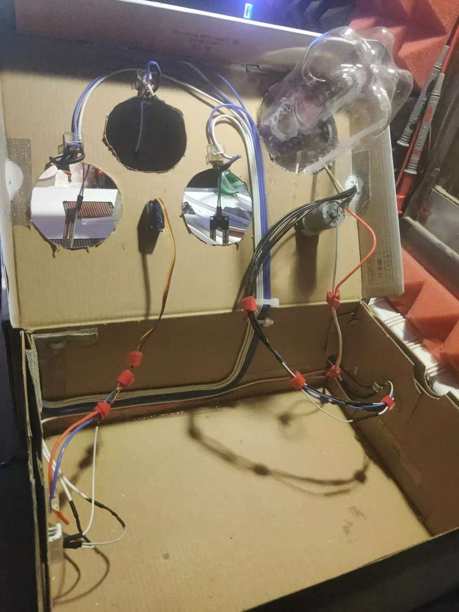

Hardware
These are the main parts of the controller. We drew the full circuit in EasyEDA.
The brain
C8051F380 microcontroller
The brain of the system. It reads all the sensors and modules, handles the touchscreen and decides when to water.
Sensors and modules
Real-time clock module (DS1307 / DS3231)
An external clock module that counts the real time and date. It has its own backup battery, so it keeps counting even when the main power is off, and the 8051 reads the time from it over I2C.
Soil moisture sensors
Three sensors (right, front and left) measure how wet the soil is, so the system only waters where it's dry.
Light sensor (TEMT6000)
A phototransistor: the more light hits it, the more current flows through it. A resistor on the module turns that current into a voltage, which the microcontroller reads through the ADC to know how bright it is.
Rain sensor (MH-RD raindrops module)
A board with copper tracks that detects water drops on its surface, so the system doesn't water the plants when nature is already doing it.
Temperature sensor (LM75)
A digital temperature sensor that sends its reading over I2C, the same bus the clock module uses. The temperature is shown live on the touchscreen.
Outputs and display
Relay module
An electrical switch the microcontroller uses to turn the water on and off.
Servo motor
Controlled with a PWM signal to move to an exact position.
Touchscreen LCD (320×240)
Lets the user see live sensor data and change settings across several screens.
Inside the boxes

